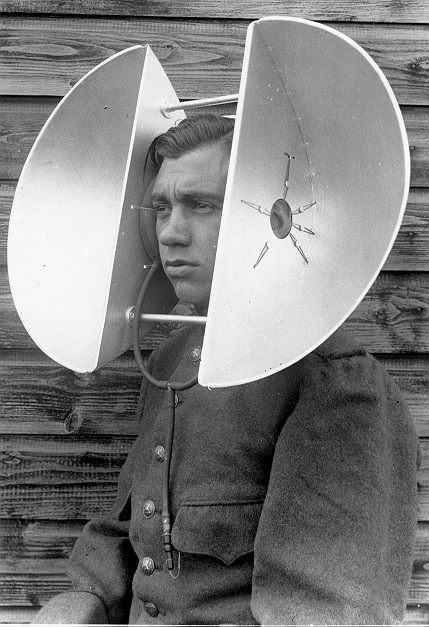
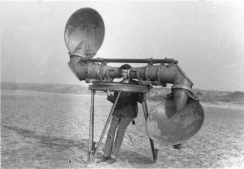
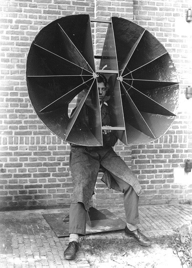
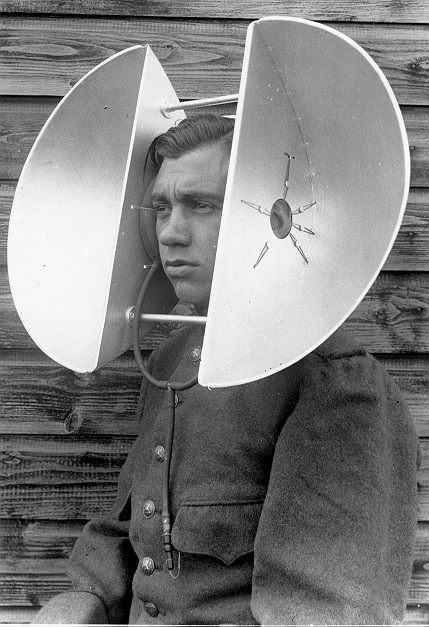
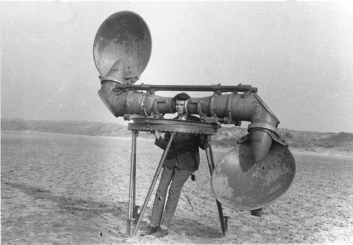
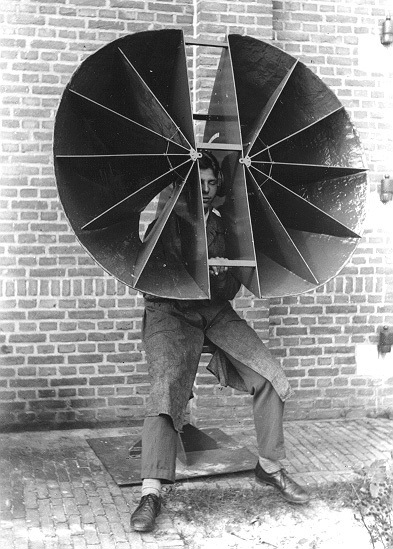

Acoustic Listening Devices
During WWI and WWII we, the Dutch, developed some pretty weird listening devices to detect airplanes.




During WWI and WWII we, the Dutch, developed some pretty weird listening devices to detect airplanes.


